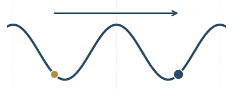

01 / Langevin dynamics
Research poster
Berry–Esseen Bounds for Periodic Langevin Dynamics
Quantitative Gaussian approximation for periodic Langevin dynamics. My contributions include controlling the friction dependence of the Berry–Esseen constant in the one-dimensional low-friction regime (Proposition 11.1).
View research poster →